A physical deck · A digital reflection
What do our
digital lives
say about us?
Twelve tarot-inspired cards exploring the selves we leave behind in playlists, platforms, and everyday digital habits.
I brought those fragments together in a handmade deck. Scan a printed card or choose one below to uncover its meaning.

Pick a card that catches your attention, or scan one from the printed deck.
Explore its upright and reversed meanings: two sides of the same pattern.
Consider what feels familiar. These cards are prompts for reflection.
The collection / I—XII
Fragments of a self
Music, connection, reinvention, and the parts of ourselves we keep hidden. Choose a card to read.
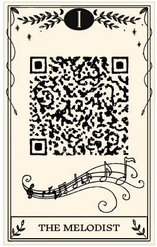
IThe Melodist
Read the card ↗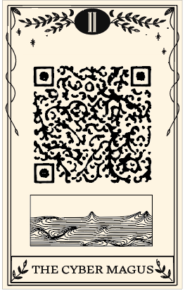
IIThe Cyber Magus
Read the card ↗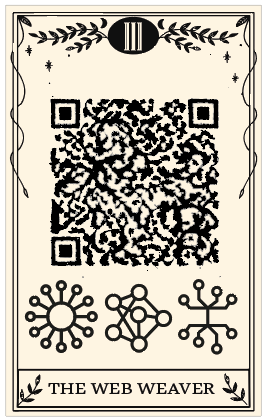
IIIThe Web Weaver
Read the card ↗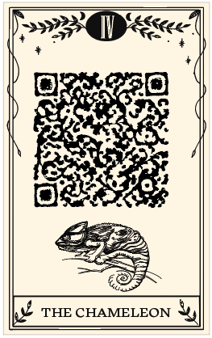
IVThe Chameleon
Read the card ↗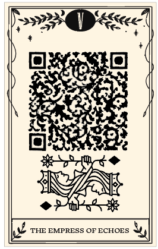
VThe Empress of Echoes
Read the card ↗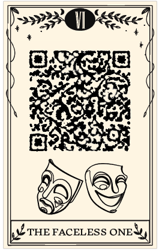
VIThe Faceless One
Read the card ↗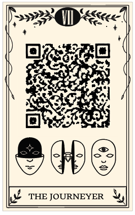
VIIThe Journeyer
Read the card ↗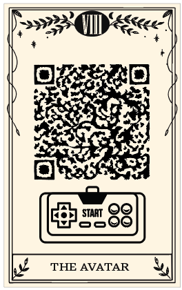
VIIIThe Avatar
Read the card ↗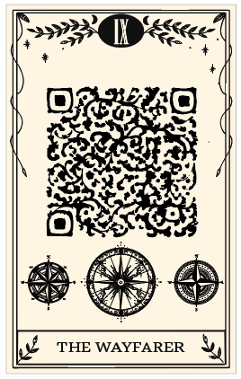
IXThe Wayfarer
Read the card ↗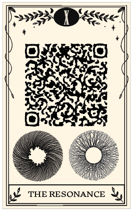
XThe Resonance
Read the card ↗ XI
XI
The Kaleidoscope
Read the card ↗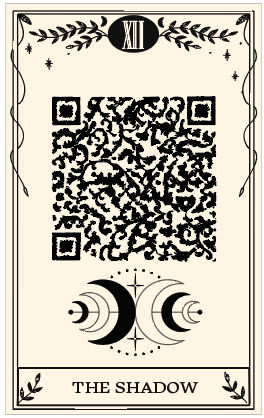
XIIThe Shadow
Read the card ↗
From screen to cardstock
An old ritual.
A new kind of mirror.
I was interested in how tarot and personal data both offer interpretations of who we are. This deck translates my digital habits into symbolic archetypes, with decorative QR codes connecting the physical cards to their online readings.
The result is twelve cards, custom backs, a handmade box, and this companion website.
See the design process ↗